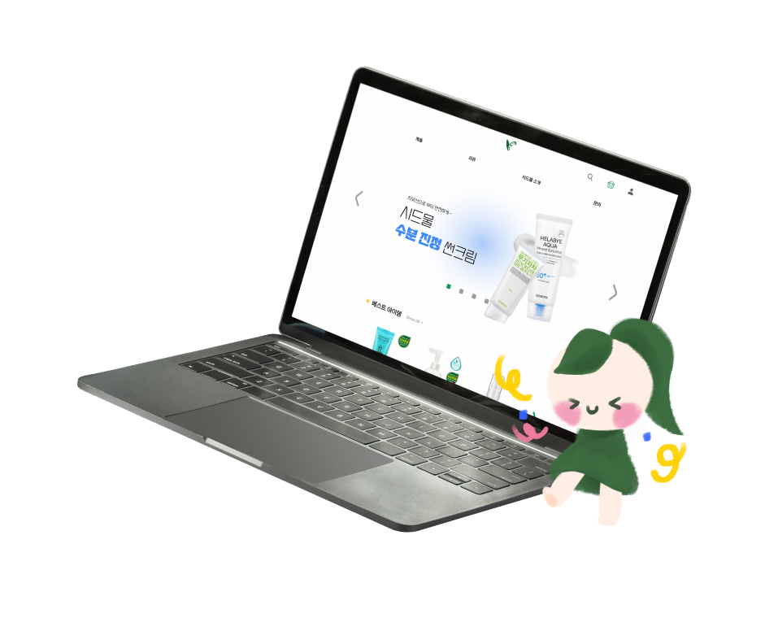

문제성 피부를 위한 자연주의 지향 화장품
브랜드 ‘시드물’의 홈페이지를
심미성과 사용성을 고려하여 디자인하고 구현하였습니다.
I designed and implemented the website of the natural-oriented cosmetic brand for problematic skin 'Sidmool', focusing on aesthetics and usability.
Personal Project
Project duration： 19 days
Tool：



![Overview. Since 2006, Sidmool is a cosmetic brand producing and manufacturing natural oriented cosmetics. I aimed to express the brand's values with simple, clean mood that empasizes Sidmool's philosophy. Problems. The menu structure is overly complex. Banners are unnecessary and cluttered.The layout feels placed without clear reasoning. The overall design looks outdated. Improvements. Simplify the menu structure. Minimize or remove the banners. Use a simpler layout. Adopt a clean design that evokes nature while still feeling approachable to the main customer base. As improvement plans, i have suggested simplifying the menu structure, minimizing or removing banners and layout and clean design.](img/sidmool/sidmool_1.jpg)
![This shows two personas. The first persona is a 24 year old office worker who enjoys using social media and loves makeup. She says 'I think function matters most when it comes to cosmetics. I bought products after seeing ads that appeared frequently on social media but has often felt disappointed because many products looked good yet its efficacy is poor. Value for money matters most to me and I want to use cosmetics that are reasonably priced while genuinely working well'. The second persona is a 42 year old stay at home mom who enjoys searching for information and has many concerns about her child's skin. She says 'I'm looking for cosmetics with real reviews. My teenage daughter is struggling with acne but every search i try only turns up posts that are advertisements. i wonders if there are any products with genuinely honest reviews rather than promotional content.'](img/sidmool/sidmool_2.jpg)
![Main page redesign description. Navigation. The mascot is placed here to add a point to a plain menu. Hovering the mouse triggers a full dropdown menu so users can view all product categories at once. GNB. The previously complex and inconvenient GNB and LNB have been simplified around essential elements only. Hovering the mouse reveals the search bar while it stays hidden by default to keep the overall feel simple. Banner. The banner that once felt small and cramped has been expanded to fill the full screen so it stands out more. The swipe buttons and pagination were set to the brand's variation color '#138E53' to create a sense of unity. Products zone. Best selling items are placed near the top so users can access them more easily. The button that leads to a page showing all items in a category was designed to feel warm and playful as if drawn by a child. A Sidmool Solution category was added to organize and display the brand's signature products. Since the page felt relatively static overall this section was set up to feel more dynamic. A More items button was placed so users can view every item in a category at once. AD. The app advertisement that used to appear as a banner following the page as users scrolled has been repositioned to the bottom of the page with sense of space so it feels both noticeable and stable. Top button. A fixed button that lets users jump quickly back to the top of the page was added so they can move around the page more easily. Footer. Basic company information is set in a smaller font size while contact center and account deposit information is written larger so users can more easily find the information they need.](img/sidmool/sidmool_9.jpg)
![Company Page. Introduction of company. A tab menu was added within the brand introduction page so users can easily move to the philosophy page as well. Each page title is displayed as a large image. A fixed sticker like element was placed to give the page a sense of cuteness and familiarity. The logos of the foundations the brand supports were given a 3D badge like effect. A map was inserted so visitors can easily find detailed information about the brand headquarters location. Philosophy of company. The brand's core values are shown through icons so they can be understood at a glance. Each icon is placed inside a circle that looks hand drawn with crayon giving the page a pure and simple feel. Images that evoke each philosophy were used to help visitors understand what the brand stands for. A thin connecting line runs through the center linking the pieces of content together and giving them a sense of relation. The brand's slogan and mascot were placed here to draw attention and add variation to the otherwise repetitive layout.](img/sidmool/sidmool_11.jpg)